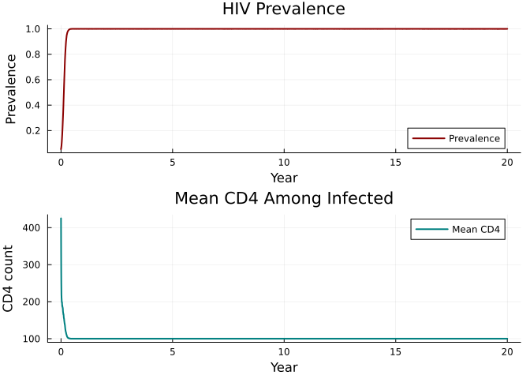

HIV on Sexual Networks
Simon Frost
Overview
HIV is a sexually transmitted infection that requires structured sexual networks for realistic modeling. This vignette demonstrates:
- HIV transmission on male-female sexual networks (
MFNet) - CD4 decline dynamics
- Antiretroviral therapy (ART) as an intervention
- CD4-dependent mortality
The model follows starsim_examples/diseases/hiv.py.
Define the HIV disease
using Starsim
using Plots
using Random
mutable struct HIV <: AbstractInfection
infection::InfectionData
# HIV-specific states
on_art::StateVector{Bool, Vector{Bool}}
ti_art::StateVector{Float64, Vector{Float64}}
ti_dead_hiv::StateVector{Float64, Vector{Float64}}
cd4::StateVector{Float64, Vector{Float64}}
# Parameters
cd4_min::Float64
cd4_max::Float64
cd4_rate::Float64
art_efficacy::Float64
p_death::Float64
rng::StableRNG
end
function HIV(;
name::Symbol = :hiv,
init_prev = 0.05,
beta = Dict(:mf => 0.08),
cd4_min = 100.0,
cd4_max = 500.0,
cd4_rate = 5.0,
art_efficacy = 0.96,
p_death = 0.05 / 365,
)
inf = InfectionData(name; init_prev=init_prev, beta=beta, label="HIV")
HIV(inf,
BoolState(:on_art; default=false),
FloatState(:ti_art; default=Inf),
FloatState(:ti_dead_hiv; default=Inf),
FloatState(:cd4; default=500.0),
Float64(cd4_min), Float64(cd4_max), Float64(cd4_rate),
Float64(art_efficacy), Float64(p_death),
StableRNG(0),
)
end
Starsim.disease_data(d::HIV) = d.infection.dd
Starsim.module_data(d::HIV) = d.infection.dd.mod
function Starsim.init_pre!(d::HIV, sim)
md = module_data(d)
md.t = Timeline(start=sim.pars.start, stop=sim.pars.stop, dt=sim.pars.dt)
d.rng = StableRNG(hash(md.name) ⊻ sim.pars.rand_seed)
all_states = [d.infection.susceptible, d.infection.infected,
d.infection.ti_infected, d.infection.rel_sus,
d.infection.rel_trans, d.on_art, d.ti_art,
d.ti_dead_hiv, d.cd4]
for s in all_states
add_module_state!(sim.people, s)
end
validate_beta!(d, sim)
npts = md.t.npts
define_results!(d,
Result(:new_infections; npts=npts),
Result(:n_susceptible; npts=npts, scale=false),
Result(:n_infected; npts=npts, scale=false),
Result(:prevalence; npts=npts, scale=false),
Result(:new_deaths; npts=npts),
Result(:mean_cd4; npts=npts, scale=false),
Result(:n_on_art; npts=npts, scale=false),
)
md.initialized = true
return d
end
function Starsim.validate_beta!(d::HIV, sim)
dd = disease_data(d)
dt = sim.pars.dt
if dd.beta isa Dict
for (name, b) in dd.beta
dd.beta_per_dt[Symbol(name)] = 1.0 - exp(-Float64(b) * dt)
end
elseif dd.beta isa Real
for (name, _) in sim.networks
dd.beta_per_dt[name] = 1.0 - exp(-Float64(dd.beta) * dt)
end
end
return d
end
function Starsim.init_post!(d::HIV, sim)
people = sim.people
active = people.auids.values
n = length(active)
n_infect = max(1, Int(round(d.infection.dd.init_prev * n)))
infect_uids = UIDs(active[randperm(d.rng, n)[1:min(n_infect, n)]])
d.infection.susceptible[infect_uids] = false
d.infection.infected[infect_uids] = true
d.infection.ti_infected.raw[infect_uids.values] .= 1.0
return d
end
function Starsim.step_state!(d::HIV, sim)
ti = module_data(d).t.ti
# CD4 dynamics
for u in sim.people.auids.values
if d.infection.infected.raw[u] && sim.people.alive.raw[u]
if d.on_art.raw[u]
d.cd4.raw[u] += (d.cd4_max - d.cd4.raw[u]) / d.cd4_rate
d.infection.rel_trans.raw[u] = 1.0 - d.art_efficacy
else
d.cd4.raw[u] += (d.cd4_min - d.cd4.raw[u]) / d.cd4_rate
end
# CD4-dependent mortality
scale = (d.cd4.raw[u] - d.cd4_max)^2 / (d.cd4_min - d.cd4_max)^2
if rand(d.rng) < d.p_death * scale
request_death!(sim.people, UIDs([u]), ti)
d.ti_dead_hiv.raw[u] = Float64(ti)
end
end
end
return d
end
function Starsim.set_prognoses!(d::HIV, target::Int, source::Int, sim)
ti = module_data(d).t.ti
d.infection.susceptible.raw[target] = false
d.infection.infected.raw[target] = true
d.infection.ti_infected.raw[target] = Float64(ti)
push!(d.infection.infection_sources, (target, source, ti))
return
end
function Starsim.step!(d::HIV, sim)
md = module_data(d)
ti = md.t.ti
dd = disease_data(d)
new_infections = 0
for (net_name, net) in sim.networks
edges = network_edges(net)
isempty(edges) && continue
beta_dt = get(dd.beta_per_dt, net_name, 0.0)
beta_dt == 0.0 && continue
p1 = edges.p1; p2 = edges.p2; eb = edges.beta
inf_raw = d.infection.infected.raw
sus_raw = d.infection.susceptible.raw
rt_raw = d.infection.rel_trans.raw
rs_raw = d.infection.rel_sus.raw
@inbounds for i in 1:length(edges)
src, trg = p1[i], p2[i]
if inf_raw[src] && sus_raw[trg]
p = rt_raw[src] * rs_raw[trg] * beta_dt * eb[i]
if rand(d.rng) < p
set_prognoses!(d, trg, src, sim)
new_infections += 1
end
end
if inf_raw[trg] && sus_raw[src]
p = rt_raw[trg] * rs_raw[src] * beta_dt * eb[i]
if rand(d.rng) < p
set_prognoses!(d, src, trg, sim)
new_infections += 1
end
end
end
end
return new_infections
end
function Starsim.step_die!(d::HIV, death_uids::UIDs)
d.infection.susceptible[death_uids] = false
d.infection.infected[death_uids] = false
d.on_art[death_uids] = false
return d
end
function Starsim.update_results!(d::HIV, sim)
md = module_data(d)
ti = md.t.ti
ti > length(md.results[:n_susceptible].values) && return d
active = sim.people.auids.values
n_sus = 0; n_inf = 0; n_art = 0; n_dead = 0
cd4_sum = 0.0; n_cd4 = 0
@inbounds for u in active
n_sus += d.infection.susceptible.raw[u]
n_inf += d.infection.infected.raw[u]
n_art += d.on_art.raw[u]
if d.ti_dead_hiv.raw[u] == Float64(ti)
n_dead += 1
end
if d.infection.infected.raw[u]
cd4_sum += d.cd4.raw[u]
n_cd4 += 1
end
end
n_total = Float64(length(active))
md.results[:n_susceptible][ti] = Float64(n_sus)
md.results[:n_infected][ti] = Float64(n_inf)
md.results[:prevalence][ti] = n_total > 0 ? n_inf / n_total : 0.0
md.results[:new_deaths][ti] = Float64(n_dead)
md.results[:mean_cd4][ti] = n_cd4 > 0 ? cd4_sum / n_cd4 : 0.0
md.results[:n_on_art][ti] = Float64(n_art)
return d
end
function Starsim.finalize!(d::HIV)
md = module_data(d)
for (target, source, ti) in d.infection.infection_sources
if ti > 0 && ti <= length(md.results[:new_infections].values)
md.results[:new_infections][ti] += 1.0
end
end
return d
endRunning an HIV simulation
sim = Sim(
n_agents = 5_000,
networks = MFNet(participation_rate=0.8),
diseases = HIV(beta=Dict(:mf => 0.08)),
dt = 1.0,
stop = 365.0 * 20, # 20 years
rand_seed = 42,
verbose = 0,
)
run!(sim)Sim(5000 agents, 0.0→7300.0, dt=1.0, nets=1, dis=1, status=complete)HIV dynamics
prev = get_result(sim, :hiv, :prevalence)
n_inf = get_result(sim, :hiv, :n_infected)
mean_cd4 = get_result(sim, :hiv, :mean_cd4)
tvec = (0:length(prev)-1) ./ 365
p1 = plot(tvec, prev, lw=2, color=:darkred, label="Prevalence", ylabel="Prevalence")
p2 = plot(tvec, mean_cd4, lw=2, color=:teal, label="Mean CD4", ylabel="CD4 count")
plot(p1, p2, layout=(2, 1), xlabel="Year",
title=["HIV Prevalence" "Mean CD4 Among Infected"])
Key metrics
new_deaths = get_result(sim, :hiv, :new_deaths)
println("Final prevalence: $(round(prev[end], digits=4))")
println("Peak infected: $(Int(maximum(n_inf)))")
println("Total HIV deaths: $(Int(sum(new_deaths)))")
println("Final mean CD4: $(round(mean_cd4[end], digits=1))")Final prevalence: 1.0
Peak infected: 4927
Total HIV deaths: 3155
Final mean CD4: 100.0Summary
- HIV on sexual networks shows gradual epidemic buildup driven by partnership formation
- Without ART, CD4 counts decline steadily toward the minimum, increasing mortality
- CD4-dependent mortality creates nonlinear dynamics: as the epidemic matures, infected individuals die faster
- The
MFNetnetwork constrains transmission to male-female pairs, capturing sexual network structure